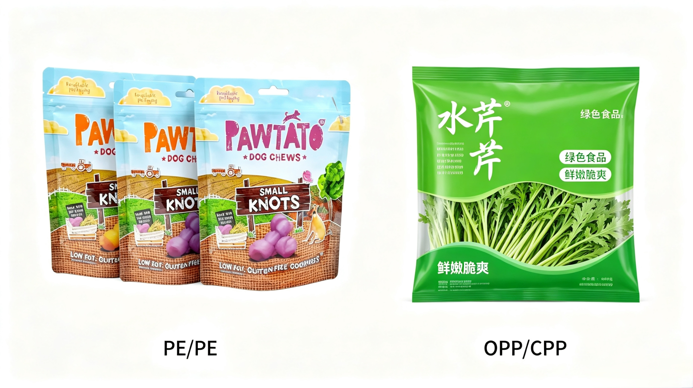

Mono-material PE/PE & OPP/CPP Recyclable Flexible Packaging

Against tightened EPR rules and worldwide sustainable packaging transformation, two core fully recyclable mono-olefin laminate structures — PE/PE all-polyethylene lamination and OPP/CPP all-polypropylene lamination — have rapidly replaced traditional multi-material composite films across food and daily chemical flexible packaging sectors, becoming mainstream eco-friendly packaging picks for global FMCG brands.
1. Application & Target Product Classification
Mono PE/PE Structure (Full PE, 100% recyclable in standard PE recycling stream)
Entirely laminated with different grades of polyethylene without foreign polymer, aluminium or PET layers, compatible with global LDPE recycling recovery without layer separation.
Food packaging coverage: Frozen food pouches, fresh vegetable bags, bread & bakery wraps, bulk rice/grain sacks, pet dry food bags, small portion sauce & liquid condiment sachets, chilled meat outer wrapping.
Daily necessities: Liquid laundry detergent stand-up pouches, hand sanitizer refill bags, household cleaning agent packaging, disposable plastic retail shopping bags, e-commerce plastic courier mailers.
Core merits: Excellent moisture barrier, outstanding low-temperature resistance and superior heat-sealing performance for liquid containment.
Mono OPP/CPP Structure (Full PP mono-material, fully recyclable within PP recycling channel)
Outer printable OPP + inner heat-sealable CPP, pure polypropylene composition compliant with CEFLEX circular packaging standards, widely adopted by major snack multinational brands for upgraded recyclable packs.
Food packaging coverage: Potato chips, biscuits, puffed snacks, hard candy, instant noodle seasoning bags, dehydrated soup powder packs, dried fruit & nut outer packaging, low-moisture baked goods.
Daily necessities: Dry powder cosmetics sachets, facial mask outer bags, small personal care accessory packaging, solid soap outer wraps.
Core merits: High transparency, high rigidity, good heat resistance for high-speed automatic packaging lines.
2. Market Cost Comparison
Cost ranking: PE/PE < OPP/CPP, both far more cost-effective than multi-layer composite laminates (PET/AL/PE, PA/PE etc.) in long-term total ownership cost.
- PE/PE Mono Packaging: Raw material supply abundant, unit film cost around 8%–12% cheaper than OPP/CPP.
- OPP/CPP Mono Packaging: Raw PP price slightly higher than PE; upfront unit cost is +10%~15% vs PE/PE.
- Compared with non-recyclable multi-material composite film: Mono PE/OPP packaging's initial cost is mostly within +0~+12%, while recycling cost drops drastically.
3. Industry Development Outlook
Driven by Europe, North America and Southeast Asia's plastic restriction & recycling policies, global mono PE/PP flexible packaging market maintains 10%+ annual compound growth, food application accounts for nearly 46% of total market demand. High-barrier modified mono PE/OPP film technologies keep maturing, further expanding their replacement scope for traditional high-barrier composite packaging.
Need sustainable packaging solutions for your products? Contact our packaging experts →